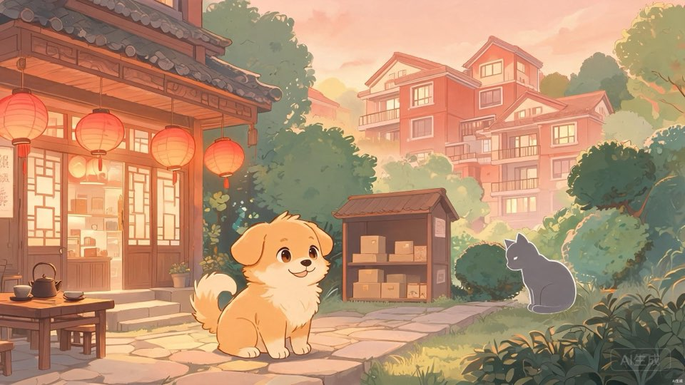

快乐小狗丢失案
加载中...

快乐小狗寻回记
一场穿越昼夜的解谜冒险
开始游戏
任务完成！
再玩一次
📍
天成花园小区
📋
任务
08:00
+1h
+2h
+3h
+4h
+5h
🚬
烟
🦴
狗粮
🐟
猫粮
🐚
海螺
🔮
潮汐珠
🪶
海风羽
💧
月光露
按空格交互
NPC
▼ 点击继续
寻找快乐小狗
陈记茶叶店的快乐小狗走失了
关闭
⏰ 在此处休息
休息可以快进时间
等到夜晚 (22:00)
取消
✓
交互